1 Γεωμετρικοί τόποι και γεωμετρικές κατασκευές με τη βοήθεια των γεωμετρικών τόπων
1.1 Γεωμετρικοί Τόποι και Γεωμετρικές Κατασκευές
1.1.1 Έννοια και Ορισμός του Γεωμετρικού Τόπου
Γεωμετρικός Τόπος
- Γεωμετρικός Τόπος ονομάζεται το σύνολο (ή σχήμα) όλων των σημείων του επιπέδου, τα οποία έχουν μία κοινή χαρακτηριστική ιδιότητα \(F\).
Για να αποδειχθεί ότι ένα σχήμα \(\Sigma\) είναι ο γεωμετρικός τόπος των σημείων με την ιδιότητα \(F\), απαιτείται η εξασφάλιση δύο συνθηκών:
Ευθύ: Κάθε σημείο που έχει την ιδιότητα \(F\) ανήκει στο σχήμα \(\Sigma\).
Αντίστροφο: Κάθε σημείο που ανήκει στο σχήμα \(\Sigma\) έχει την ιδιότητα \(F\) (ή ισοδύναμα, κάθε σημείο εκτός του \(\Sigma\) δεν έχει την ιδιότητα \(F\)).
1.1.2 Βασικοί Θεμελιώδεις Γεωμετρικοί Τόποι
Κύκλος \((O, R)\): Ο γεωμετρικός τόπος των σημείων του επιπέδου που απέχουν σταθερή απόσταση \(R\) από ένα σταθερό σημείο \(O\).
Μεσοκάθετος ευθύγραμμου τμήματος: Ο γεωμετρικός τόπος των σημείων του επιπέδου που ισαπέχουν από τα άκρα \(A\) και \(B\) του τμήματος \(AB\).
Διχοτόμος γωνίας: Ο γεωμετρικός τόπος των εσωτερικών σημείων μιας γωνίας \(\widehat{xOy}\) που ισαπέχουν από τις πλευρές της.
Μεσοπαράλληλος ευθεία / Δύο παράλληλες:
- Ο γεωμετρικός τόπος των σημείων που απέχουν σταθερή απόσταση \(\upsilon\) από μια ευθεία \(\epsilon\) αποτελείται από δύο ευθείες παράλληλες προς την \(\epsilon\), εκατέρωθεν αυτής σε απόσταση \(\upsilon\).
- Ο γεωμετρικός τόπος των σημείων που ισαπέχουν από δύο παράλληλες ευθείες είναι η μεσοπαράλληλη ευθεία τους.
Κύκλος διαμέτρου \(AB\): Ο γεωμετρικός τόπος των σημείων του επιπέδου από τα οποία ένα σταθερό τμήμα \(AB\) φαίνεται υπό ορθή γωνία (\(90^\circ\)) (χωρίς τα άκρα $A, B$).
Τόξο που δέχεται σταθερή γωνία \(\phi\): Ο γεωμετρικός τόπος των σημείων από τα οποία σταθερό τμήμα \(AB\) φαίνεται υπό γωνία \(\phi\) αποτελείται από δύο τόξα κύκλων ίσης ακτίνας με κοινή χορδή το \(AB\), συμμετρικά ως προς την ευθεία \(AB\) (χωρίς τα άκρα \(A, B\)).
1.1.3 Γεωμετρικές Κατασκευές με τη Βοήθεια των Γεωμετρικών Τόπων
Γεωμετρική Κατασκευή:
- Γεωμετρική Κατασκευή:Ονομάζεται η σχεδίαση ενός γεωμετρικού σχήματος με τη αποκλειστική χρήση των οργάνων: κανόνα (χωρίς υποδιαιρέσεις) και διαβήτη.
Μέθοδος των Γεωμετρικών Τόπων: Όταν ένα πρόβλημα ανάγεται στον προσδιορισμό ενός αγνώστου σημείου \(M\), αναζητούμε δύο ανεξάρτητες ιδιότητες τις οποίες πρέπει να πληροί το \(M\) σύμφωνα με τα δεδομένα.
Η πρώτη ιδιότητα ορίζει έναν γεωμετρικό τόπο \(T_1\) και η δεύτερη έναν γεωμετρικό τόπο \(T_2\).
Το ζητούμενο σημείο \(M\) προσδιορίζεται ως η τομή των δύο γεωμετρικών τόπων (\(M = T_1 \cap T_2\)).
1.1.3.1 Τα 4 Στάδια Επίλυσης ενός Προβλήματος Κατασκευής:
Ανάλυση: Υποθέτουμε το πρόβλημα λυμένο, σχεδιάζουμε ένα βοηθητικό σχήμα και αναλύουμε τις ιδιότητες των στοιχείων του ώστε να αναγάγουμε την κατασκευή στον προσδιορισμό σημείων μέσω της τομής γεωμετρικών τόπων.
Σύνθεση (ή Κατασκευή): Περιγράφουμε τη διαδοχική εκτέλεση των βημάτων κατασκευής με τον κανόνα και τον διαβήτη.
Απόδειξη: Αποδεικνύουμε αυστηρά ότι το σχήμα που κατασκευάστηκε ικανοποιεί όλες τις απαιτήσεις και τα δεδομένα του προβλήματος.
Διερεύνηση: Εξετάζουμε τις συνθήκες κάτω από τις οποίες το πρόβλημα έχει λύση, το πλήθος των δυνατών λύσεων (ανάλογα με τον αριθμό των σημείων τομής των γεωμετρικών τόπων) ή αν είναι αδύνατο.
1.2 Εφαρμογές (Λυμένες Ασκήσεις / Παραδείγματα)
Εφαρμογή 1
Εκφώνηση: Να κατασκευαστεί τρίγωνο \(ABΓ\) του οποίου δίνονται η πλευρά \(BΓ = a\), το ύψος \(AH = \upsilon_a\) και η γωνία της κορυφής \(\widehat{A} = \omega\).
Απάντηση
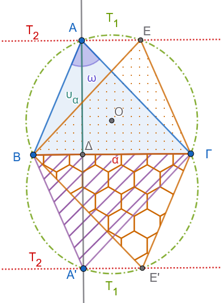
Ανάλυση: Έστω \(ABΓ\) το ζητούμενο τρίγωνο. Θεωρούμε τη βάση \(BΓ = a\) σταθερή. Η κορυφή \(A\) πρέπει να πληροί δύο ιδιότητες:
Βλέπει το τμήμα \(BΓ\) υπό γνωστή γωνία \(\omega\), άρα ανήκει στον γεωμετρικό τόπο \(T_1\), που είναι τα δύο συμμετρικά τόξα με χορδή \(BΓ\) τα οποία δέχονται γωνία \(\omega\).
Απέχει από τη βάση \(BΓ\) γνωστή απόσταση \(\upsilon_a\), άρα ανήκει στον γεωμετρικό τόπο \(T_2\), που είναι οι δύο ευθείες \(\epsilon, \epsilon'\) παράλληλες προς τη \(BΓ\) σε απόσταση \(\upsilon_a\). Επομένως, η κορυφή \(A\) προσδιορίζεται ως η τομή των \(T_1\) και \(T_2\) (\(A = T_1 \cap T_2\)).
Σύνθεση:
Σχεδιάζουμε τμήμα \(BΓ = a\).
Κατασκευάζουμε τα τόξα \(T_1\) με χορδή \(BΓ\) που δέχονται γωνία \(\omega\).
Φέρουμε ευθεία \(\epsilon \parallel BΓ\) σε απόσταση \(\upsilon_a\).
Η ευθεία \(\epsilon\) τέμνει το τόξο \(T_1\) στο σημείο \(A\). Ενώνουμε τα \(AB\) και \(AΓ\).
Απόδειξη: Το τρίγωνο \(ABΓ\) έχει πλευρά \(BΓ = a\), ύψος \(AH = \upsilon_a\) (αφού \(A \in \epsilon\)) και γωνία \(\widehat{A} = \omega\) (αφού \(A \in T_1\)).
Διερεύνηση: Αν η παράλληλη ευθεία τέμνει τα τόξα, υπάρχουν λύσεις (οι οποίες λόγω συμμετρίας είναι ισοδύναμες). Αν η απόσταση \(\upsilon_a\) είναι μεγαλύτερη από το βέλος του τόξου, το πρόβλημα είναι αδύνατο.
Εφαρμογή 2
Εκφώνηση: Να βρεθεί ο γεωμετρικός τόπος των κέντρων των κύκλων που διέρχονται από δύο σταθερά σημεία \(A\) και \(B\).
Απάντηση
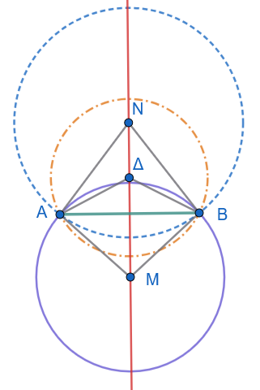
Ευθύ: Έστω \(M\) το κέντρο ενός κύκλου που διέρχεται από τα \(A\) και \(B\). Τότε τα τμήματα \(MA\) και \(MB\) είναι ακτίνες του ίδιου κύκλου, άρα \(MA = MB\). Συνεπώς, το σημείο \(M\) ισαπέχει από τα \(A\) και \(B\), οπότε ανήκει στη μεσοκάθετο ευθεία \(\epsilon\) του τμήματος \(AB\).
Αντίστροφο: Έστω \(N\) ένα τυχαίο σημείο της μεσοκαθέτου \(\epsilon\) του τμήματος \(AB\). Από την ιδιότητα της μεσοκαθέτου ισχύει \(NA = NB\). Άρα ο κύκλος με κέντρο \(N\) και ακτίνα \(NA\) διέρχεται και από το σημείο \(B\).
Συμπέρασμα: Ο ζητούμενος γεωμετρικός τόπος είναι η μεσοκάθετος ευθεία του τμήματος \(AB\).
Εφαρμογή 3
Εκφώνηση: Να βρεθεί ο γεωμετρικός τόπος των μέσων των χορδών δοσμένου κύκλου \((O, R)\) οι οποίες διέρχονται από σταθερό εσωτερικό σημείο \(A\) του κύκλου.
Απάντηση
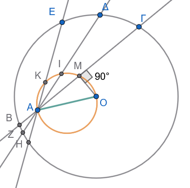
Έστω \(B Γ\) μια τυχαία χορδή του κύκλου \((O, R)\) που διέρχεται από το σταθερό σημείο \(A\), και \(M\) το μέσο της.
Από τη θεωρία του κύκλου, το απόστημα \(OM\) είναι κάθετο στη χορδή \(BΓ\) στο μέσο της \(M\), δηλαδή \(\widehat{OMA} = 90^\circ\).
Επειδή τα σημεία \(O\) και \(A\) είναι σταθερά, το μεταβλητό σημείο \(M\) βλέπει το σταθερό τμήμα \(OA\) υπό ορθή γωνία (\(90^\circ\)).
Συνεπώς, το σημείο \(M\) ανήκει στον κύκλο με διάμετρο \(OA\).
Συμπέρασμα: Ο γεωμετρικός τόπος των μέσων \(M\) είναι ο κύκλος διαμέτρου \(OA\) (που βρίσκεται ολόκληρος εντός του αρχικού κύκλου, αφού το \(A\) είναι εσωτερικό σημείο).
Εφαρμογή 4
Εκφώνηση: Να κατασκευαστεί ορθογώνιο τρίγωνο \(ABΓ\) (\(\widehat{A} = 90^\circ\)) όταν δίνονται η υποτείνουσα \(BΓ = a\) και το ύψος προς την υποτείνουσα \(AH = \upsilon_a\).
Απάντηση
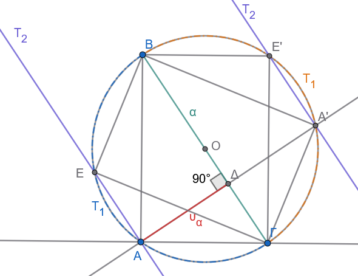
Ανάλυση: Θεωρούμε την υποτείνουσα \(BΓ = a\) σταθερή. Η ορθή κορυφή \(A\) ικανοποιεί δύο συνθήκες:
Βλέπει το τμήμα \(BΓ\) υπό ορθή γωνία (\(90^\circ\)), άρα ανήκει στον κύκλο διαμέτρου \(BΓ\).
Απέχει από τη \(BΓ\) απόσταση \(\upsilon_a\), άρα ανήκει σε ευθεία \(\epsilon \parallel BΓ\) σε απόσταση \(\upsilon_a\).
Σύνθεση:
Σχεδιάζουμε τμήμα \(BΓ = a\) και το μέσο του \(O\).
Γράφουμε τον κύκλο διαμέτρου \(BΓ\), δηλαδή \((O, \dfrac{a}{2})\).
Φέρουμε παράλληλη ευθεία \(\epsilon\) προς τη \(BΓ\) σε απόσταση \(\upsilon_a\).
Το σημείο τομής της ευθείας \(\epsilon\) και του κύκλου είναι η κορυφή \(A\). Ενώνουμε τα \(AB\) και \(AΓ\).
Απόδειξη: Το τρίγωνο \(ABΓ\) είναι ορθογώνιο στο \(A\) (εγγεγραμμένη σε ημικύκλιο), με υποτείνουσα \(BΓ = a\) και ύψος \(AH = \upsilon_a\).
Διερεύνηση: Το πρόβλημα έχει λύση αν και μόνο αν η ευθεία \(\epsilon\) τέμνει τον κύκλο, δηλαδή όταν \(\upsilon_a \le \dfrac{a}{2}\) (ακτίνα του κύκλου). Αν \(\upsilon_a > \dfrac{a}{2}\), το πρόβλημα είναι αδύνατο.
Εφαρμογή 5
Εκφώνηση: Δίνονται δύο ευθείες \(\delta, \epsilon\) και δύο ευθύγραμμα τμήματα \(\lambda, \mu\). Να βρεθεί σημείο \(O\) που απέχει απόσταση \(\lambda\) από την ευθεία \(\delta\) και απόσταση \(\mu\) από την ευθεία \(\epsilon\).
Απάντηση
1. Γεωμετρικοί Τόποι
Για να προσδιοριστεί το σημείο \(O\), εξετάζουμε δύο ανεξάρτητους γεωμετρικούς τόπους:
1ος Γεωμετρικός Τόπος (\(T_1\)): Τα σημεία που απέχουν απόσταση \(\lambda\) από την ευθεία \(\delta\) ανήκουν στις ευθείες \(\delta_1, \delta_2\) που είναι παράλληλες προς τη \(\delta\) σε απόσταση \(\lambda\) εκατέρωθεν αυτής (\(T_1 = \delta_1 \cup \delta_2\)).
2ος Γεωμετρικός Τόπος (\(T_2\)): Τα σημεία που απέχουν απόσταση \(\mu\) από την ευθεία \(\epsilon\) ανήκουν στις ευθείες \(\epsilon_1, \epsilon_2\) που είναι παράλληλες προς την \(\epsilon\) σε απόσταση \(\mu\) εκατέρωθεν αυτής (\(T_2 = \epsilon_1 \cup \epsilon_2\)).
Τα ζητούμενα σημεία \(O\) είναι τα σημεία τομής των δύο γεωμετρικών τόπων: \[O \in (\delta_1 \cup \delta_2) \cap (\epsilon_1 \cup \epsilon_2)\]
Αλλάξτε την τιμή των δρομέων λ και μ (μεταβολή των μηκών λ και μ)
Από τα Α και Β αλλάζετε την θέση της δ.
Από τα Γ και Δ αλλάζετε την θέση της ε.
Κάντε διερεύνηση σύμφωνα με τα παρακάτω.
2. Πλήρης Διερεύνηση
Το πλήθος των δυνατών λύσεων εξαρτάται από τη σχετική θέση των αρχικών ευθειών \(\delta\) και \(\epsilon\):
Περίπτωση Α: Οι ευθείες \(\delta\) και \(\epsilon\) τέμνονται (\(\delta \nparallel \epsilon\))
Αν οι ευθείες \(\delta\) και \(\epsilon\) σχηματίζουν γωνία \(\omega \in (0^\circ, 180^\circ)\):
Η ευθεία \(\delta_1\) τέμνει τις ευθείες \(\epsilon_1, \epsilon_2\) σε 2 σημεία.
Η ευθεία \(\delta_2\) τέμνει τις ευθείες \(\epsilon_1, \epsilon_2\) σε άλλα 2 σημεία.
Συμπέρασμα: Το πρόβλημα έχει πάντοτε ακριβώς 4 διακριτές λύσεις (\(O_1, O_2, O_3, O_4\)), οι οποίες αποτελούν τις κορυφές ενός παραλληλογράμμου.
Ειδική Περίπτωση Α1 (\(\delta \perp \epsilon\)): Αν οι ευθείες είναι κάθετες (\(\omega = 90^\circ\)), τα 4 σημεία σχηματίζουν ορθογώνιο παραλληλόγραμμο (και αν επιπλέον \(\lambda = \mu\), σχηματίζουν τετράγωνο).
Περίπτωση Β: Οι ευθείες \(\delta\) και \(\epsilon\) είναι παράλληλες (\(\delta \parallel \epsilon\)) Έστω \(d = d(\delta, \epsilon)\) η μεταξύ τους απόσταση. Εφόσον \(\delta \parallel \epsilon\), όλες οι ευθείες \(\delta_1, \delta_2, \epsilon_1, \epsilon_2\) είναι παράλληλες μεταξύ τους.
Β1. Αν \(d = \lambda + \mu\):
Μία από τις ευθείες του \(T_1\) ταυτίζεται με μία από τις ευθείες του \(T_2\) (συμπίπτουν στη μεσοπαράλληλη ευθεία ανάμεσα στις \(\delta\) και \(\epsilon\)).
- Συμπέρασμα: Άπειρες λύσεις (όλα τα σημεία της κοινής αυτής ευθείας).
Β2. Αν \(d = |\lambda - \mu|\) (με \(\lambda \neq \mu\)):
Μία ευθεία του \(T_1\) ταυτίζεται με μία ευθεία του \(T_2\) εξωτερικά των παράλληλων ευθειών.
- Συμπέρασμα: Άπειρες λύσεις (όλα τα σημεία της κοινής αυτής ευθείας).
Β3. Αν \(d = 0\) (οι ευθείες \(\delta\) και \(\epsilon\) ταυτίζονται):
Αν \(\lambda = \mu\): Οι δύο γεωμετρικοί τόποι ταυτίζονται πλήρως. Άπειρες λύσεις (όλα τα σημεία των δύο ευθειών).
Αν \(\lambda \neq \mu\): Οι ευθείες του \(T_1\) και \(T_2\) είναι όλες διακριτές και παράλληλες. Καμία λύση (0 λύσεις, αδύνατο).
Β4. Σε κάθε άλλη τιμή του \(d\) (\(d \neq \lambda + \mu\) και \(d \neq |\lambda - \mu|\)):
Καμία από τις ευθείες του \(T_1\) δεν ταυτίζεται με ευθεία του \(T_2\). Επειδή είναι όλες παράλληλες μεταξύ τους, δεν τέμνονται πουθενά.
- Συμπέρασμα: Καμία λύση (0 λύσεις, αδύνατο).
Συνοπτικός Πίνακας Διερεύνησης
\[\begin{array}{|c|c|c|} \hline \textbf{Σχετική Θέση } \delta, \epsilon & \textbf{Συνθήκη Αποστάσεων} & \textbf{Πλήθος Λύσεων} \\ \hline \delta \nparallel \epsilon & \text{Οποιαδήποτε } \lambda, \mu & \mathbf{4 \text{ σημεία (λύσεις)}} \\ \hline \delta \parallel \epsilon & d = \lambda + \mu \quad \text{ή} \quad d = |\lambda - \mu| & \mathbf{\text{Άπειρες λύσεις (1 ευθεία)}} \\ \hline \delta = \epsilon & \lambda = \mu & \mathbf{\text{Άπειρες λύσεις (2 ευθείες)}} \\ \hline \delta \parallel \epsilon & d \neq \lambda + \mu \quad \text{και} \quad d \neq |\lambda - \mu| & \mathbf{0 \text{ λύσεις (Αδύνατο)}} \\ \hline \end{array}\]
Εφαρμογή 6
Εκφώνηση: Δίνεται σημείο \(K\), ευθεία \(\epsilon\) και δύο ευθύγραμμα τμήματα \(\lambda, \mu\). Να βρεθεί σημείο \(O\) που απέχει απόσταση \(\lambda\) από το σημείο \(K\) και απόσταση \(\mu\) από την ευθεία \(\epsilon\).
Απάντηση
Αλλάξτε την τιμή των δρομέων μ και λ (μεταβολή των μηκών των τμημάτων)
Κάντε διερεύνηση. Ποια πρέπει να είναι η σχέση των μηκών ων τμημάτων και των αποστάσεων \(s_1\) και \(s_2\) για να υπάρχουν λύσεις.
Πόσες λύσεις υπάρχουν;
1ος Γεωμετρικός Τόπος: Τα σημεία που απέχουν απόσταση \(\lambda\) από το σταθερό σημείο \(K\) ανήκουν στον κύκλο \((K, \lambda)\).
2ος Γεωμετρικός Τόπος: Τα σημεία που απέχουν απόσταση \(\mu\) από την ευθεία \(\epsilon\) ανήκουν στις δύο παράλληλες ευθείες \(\epsilon_1, \epsilon_2\) που απέχουν απόσταση \(\mu\) εκατέρωθεν της \(\epsilon\).
Προσδιορισμός: Το ζητούμενο σημείο \(O\) είναι η τομή του κύκλου \((K, \lambda)\) με τις παράλληλες ευθείες \(\epsilon_1\) και \(\epsilon_2\) (\(O \in (K, \lambda) \cap (\epsilon_1 \cup \epsilon_2)\)).
1.3 Ασκήσεις
- Άσκηση 1: Να βρεθεί ο γεωμετρικός τόπος των κορυφών \(A\) των τριγώνων \(ABΓ\) που έχουν σταθερή τη βάση \(BΓ = a\) και τη διάμεσο \(AM = μ_a\) γνωστού μήκους.
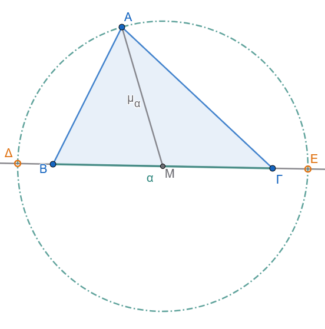
- Άσκηση 2: Δίνεται κύκλος \((O, R)\) και \(N\) τυχαίο σημείο του. Αν στην προέκταση της \(ON\) παίρνουμε σημείο \(M\) τέτοιο ώστε \(ON = NM\), να βρεθεί ο γεωμετρικός τόπος του σημείου \(M\) όταν το \(N\) διαγράφει τον κύκλο.
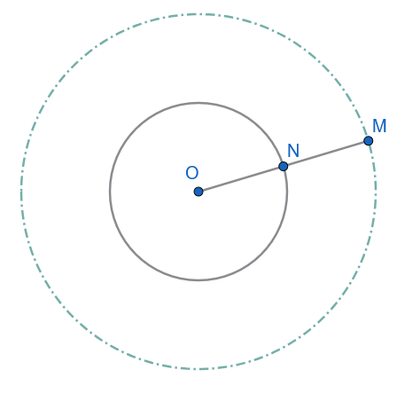
- Άσκηση 3: Να κατασκευαστεί τρίγωνο \(ABΓ\) όταν δίνονται η πλευρά \(BΓ = a\), η γωνία \(\widehat{B} = \phi\) και το άθροισμα των δύο άλλων πλευρών \(AB + AΓ = \lambda\).
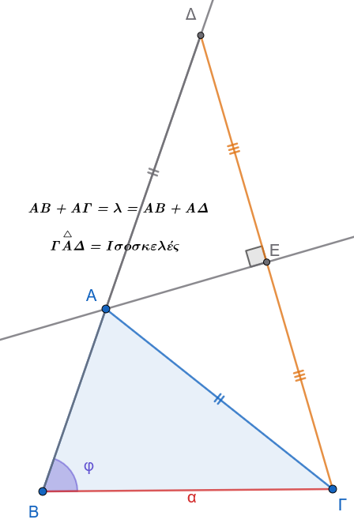
- Άσκηση 4:
Έχουμε έναν κύκλο \((c)\) με κέντρο \(O\) και μία διάμετρό του \(AB\). Από ένα τυχαίο σημείο \(\Gamma\) του κύκλου φέρνουμε την κάθετο \(\Gamma\Delta\) προς τη διάμετρο \(AB\). Στην προέκταση του ευθύγραμμου τμήματος \(\Gamma O\) (πέρα από το \(O\)), παίρνουμε ένα σημείο \(M\) τέτοιο, ώστε: \[OM = O\Delta\]
Ζητούμενο: Να βρεθεί ο γεωμετρικός τόπος του σημείου \(M\), καθώς το σημείο \(\Gamma\) κινείται πάνω στον κύκλο.
Υπόδειξη & Λύση
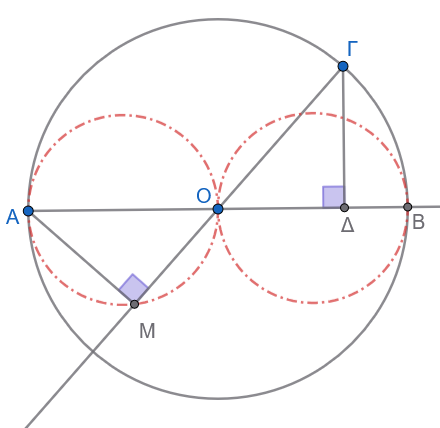
Βασικά στοιχεία και χαρακτηριστικές θέσεις:
Το κινούμενο σημείο που ορίζει τα υπόλοιπα είναι το σημείο \(\Gamma\).
Δεν υπάρχουν οριακές θέσεις, αφού το \(\Gamma\) κινείται σε κλειστή γραμμή (κύκλο).
Χαρακτηριστικές θέσεις του σημείου \(\Gamma\) είναι τα άκρα \(A, B\) της διαμέτρου, καθώς και τα άκρα \(E, Z\) της διαμέτρου που είναι κάθετη στην \(AB\).
Διερεύνηση κίνησης:
Θεωρούμε ότι το σημείο \(\Gamma\) κινείται στο τεταρτημόριο (τόξο) \(BE\).
Παρατηρούμε ότι:
Όταν το \(\Gamma\) πλησιάζει το \(B\) (\(\Gamma \to B\)), τότε \(\Delta \to B\), οπότε \(OM = OB = OA\), άρα το σημείο \(M\) πλησιάζει το \(A\) (\(M \to A\)).
Όταν το \(\Gamma\) πλησιάζει το \(E\) (\(\Gamma \to E\)), τότε το ίχνος της καθέτου \(\Delta\) πλησιάζει το κέντρο \(O\) (\(\Delta \to O\)), οπότε \(OM = 0\) και άρα το σημείο \(M\) πλησιάζει το \(O\) (\(M \to O\)).
Απόδειξη σταθερής γωνίας:
Συγκρίνουμε τα τρίγωνα \(AMO\) και \(\Gamma\Delta O\):
\(OM = O\Delta\) (από την υπόθεση)
\(OA = O\Gamma = R\) (ακτίνες του κύκλου)
\(\widehat{AOM} = \widehat{\Gamma O\Delta}\) (ως κατακορυφήν γωνίες)
Επομένως, τα τρίγωνα \(AMO\) και \(\Gamma\Delta O\) είναι ίσα (από το κριτήριο Πλευρά-Γωνία-Πλευρά).
Από την ισότητα των τριγώνων προκύπτει ότι οι αντίστοιχες γωνίες είναι ίσες: \[\widehat{AMO} = \widehat{\Gamma\Delta O} = 90^\circ \text{ (1 ορθή)}\]
Συμπέρασμα
Επειδή η γωνία \(\widehat{AMO}\) παραμένει πάντοτε ορθή (\(90^\circ\)) και το τμήμα \(AO\) είναι σταθερό (ακτίνα του αρχικού κύκλου):
Το σημείο \(M\) «βλέπει» το σταθερό τμήμα \(AO\) υπό ορθή γωνία.
Επομένως, καθώς το \(\Gamma\) διαγράφει τον αρχικό κύκλο, ο γεωμετρικός τόπος του σημείου \(M\) είναι ο κύκλος (ή οι κύκλοι) με διάμετρο το σταθερό τμήμα \(AO\) (και αντίστοιχα με διάμετρο το \(OB\)).
- Άσκηση 5:
Εκφώνηση: Δίνεται γωνία \(\widehat{xOy}\) και σημείο \(A\) στο εσωτερικό της. Να κατασκευαστεί ευθύγραμμο τμήμα \(BΓ\) με άκρα \(B \in Ox\) και \(Γ \in Oy\), το οποίο να διχοτομείται από το σημείο \(A\) (δηλαδή το \(A\) να είναι το μέσο του \(BΓ\)).
Αναλυτική Λύση
1. Ανάλυση
Έστω ότι το πρόβλημα έχει λυθεί, δηλαδή έχουμε κατασκευάσει το ευθύγραμμο τμήμα \(BΓ\) με \(B \in Ox\) και \(Γ \in Oy\), τέτοιο ώστε το σημείο \(A\) να είναι το μέσο του (\(AB = AΓ\)).
Σκεπτικό Κεντρικής Συμμετρίας:
Εφόσον το \(A\) είναι το μέσο του \(BΓ\), το σημείο \(B\) είναι το συμμετρικό του σημείου \(Γ\) ως προς κέντρο συμμετρίας το \(A\).
Επειδή το σημείο \(Γ\) ανήκει στην ημιευθεία \(Oy\), το συμμετρικό του σημείο \(B\) πρέπει να ανήκει στο συμμετρικό σχήμα της ημιευθείας \(Oy\) ως προς το κέντρο \(A\).
Έστω \(Oy'\) η συμμετρική ημιευθεία της \(Oy\) ως προς κέντρο \(A\). Τότε το σημείο \(B\) ανήκει στην \(Oy'\).
Επιπλέον, από τα δεδομένα της εκφώνησης, το σημείο \(B\) ανήκει στην ημιευθεία \(Ox\).
Επομένως, το σημείο \(B\) προσδιορίζεται ως το σημείο τομής της ημιευθείας \(Ox\) με τη συμμετρική ημιευθεία \(Oy'\): \[B = Ox \cap Oy'\]
Αφού προσδιοριστεί το σημείο \(B\), το σημείο \(Γ\) ορίζεται ως η τομή της ευθείας \(BA\) με την ημιευθεία \(Oy\).
2. Σύνθεση (Κατασκευή)
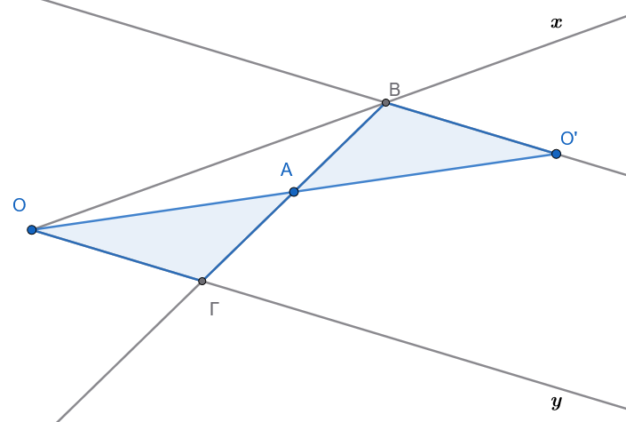
Θεωρούμε την κορυφή \(O\) της γωνίας \(\widehat{xOy}\) και κατασκευάζουμε το συμμετρικό της σημείο \(O'\) ως προς κέντρο \(A\) (στην προέκταση της \(OA\) παίρνουμε τμήμα \(AO' = OA\)).
Από το σημείο \(O'\) φέρουμε ευθεία παράλληλη προς την ημιευθεία \(Oy\). Η ευθεία αυτή είναι η συμμετρική της ευθείας \(Oy\) ως προς το σημείο \(A\).
Η παράλληλη αυτή ευθεία τέμνει την ημιευθεία \(Ox\) στο σημείο \(B\).
Φέρουμε την ευθεία \(BA\), η οποία τέμνει την ημιευθεία \(Oy\) στο σημείο \(Γ\).
To ευθύγραμμο τμήμα \(BΓ\) είναι το ζητούμενο.
3. Απόδειξη
Πρέπει να αποδείξουμε ότι το τμήμα \(BΓ\) έχει τα άκρα του στις ημιευθείες \(Ox, Oy\) και ότι το σημείο \(A\) είναι το μέσο του.
Από την κατασκευή, είναι \(B \in Ox\) και \(Γ \in Oy\).
Συγκρίνουμε τα τρίγωνα \(\triangle AOΓ\) και \(\triangle A O' B\):
\(OA = AO'\) (από την κατασκευή του συμμετρικού \(O'\)).
\(\widehat{OAΓ} = \widehat{O'AB}\) ως κατακορυφήν γωνίες.
\(\widehat{AOΓ} = \widehat{AO'B}\) ως εντός εναλλάξ γωνίες των παραλλήλων ευθειών \(Oy \parallel O'B\) που τέμνονται από την ευθεία \(OO'\).
Σύμφωνα με το κριτήριο ισότητας τριγώνων Γωνία - Πλευρά - Γωνία (Γ-Π-Γ), τα τρίγωνα \(\triangle AOΓ\) και \(\triangle AO'B\) είναι ίσα.
Από την ισότητα αυτών των τριγώνων προκύπτει ότι οι αντίστοιχες πλευρές τους είναι ίσες: \[AB = AΓ\]
Επομένως, το σημείο \(A\) είναι πράγματι το μέσο του ευθύγραμμου τμήματος \(BΓ\).
4. Διερεύνηση
Το σημείο \(A\) βρίσκεται στο εσωτερικό της γωνίας \(\widehat{xOy}\).
Η συμμετρική ευθεία της \(Oy\) ως προς το \(A\) είναι παράλληλη προς την \(Oy\) και βρίσκεται στο ημιεπίπεδο που ορίζει η \(Oy\) και περιέχει την \(Ox\).
Επειδή οι ευθείες \(Oy\) και \(Ox\) τέμνονται στο \(O\) (γωνία \(\widehat{xOy} < 180^\circ\)), η παράλληλη προς την \(Oy\) τέμνει την ημιευθεία \(Ox\) σε ένα και μοναδικό σημείο \(B\).
Συνεπώς, το πρόβλημα έχει πάντοτε ακριβώς μία μοναδική λύση.
Εναλλακτική Μέθοδος Κατασκευής (Μέθοδος Παραλληλογράμμου / Θαλή)
Υπάρχει και ένας δεύτερος, πολύ κομψός τρόπος κατασκευής:
Από το σημείο \(A\) φέρουμε ευθεία παράλληλη προς την \(Oy\), η οποία τέμνει την \(Ox\) στο σημείο \(Δ\).
Στην ημιευθεία \(Ox\) παίρνουμε τμήμα \(OB = 2 \cdot OΔ\) (δηλαδή το \(Δ\) γίνεται το μέσο του \(OB\)).
Φέρουμε την ευθεία \(BA\), η οποία τέμνει την \(Oy\) στο σημείο \(Γ\).
- Απόδειξη: Στο τρίγωνο \(\triangle OBΓ\), το τμήμα \(AΔ\) είναι παράλληλο προς τη βάση \(OΓ\) (\(AΔ \parallel OΓ\)) και το \(Δ\) είναι μέσο της \(OB\).
Από το θεώρημα της διαμέσου / Θαλή, το τμήμα \(AΔ\) συνδέει τα μέσα των πλευρών \(OB\) και \(BΓ\), συνεπώς το \(A\) είναι το μέσο της \(BΓ\).
- Άσκηση 6:
Δίνεται τρίγωνο \(AB\Gamma\) και ένα σημείο \(\Delta\) που κινείται πάνω στην πλευρά \(B\Gamma\). Για κάθε θέση του \(\Delta\) πάνω στην πλευρά \(B\Gamma\), παίρνουμε τα σημεία \(E\) και \(Z\) πάνω στις ημιευθείες \(BA\) και \(\Gamma A\) αντίστοιχα, τέτοια ώστε: \[EB = E\Delta \quad \text{και} \quad Z\Gamma = Z\Delta\]
Ζητούμενο: Να βρεθεί ο γεωμετρικός τόπος του συμμετρικού σημείου \(M\) του \(\Delta\) ως προς την ευθεία \(EZ\).
Υπόδειξη & Λύση
Διερεύνηση οριακών θέσεων:
Εξετάζοντας τις ακραίες (οριακές) θέσεις του σημείου \(\Delta\) πάνω στο ευθύγραμμο τμήμα \(B\Gamma\):
Όταν το \(\Delta\) ταυτίζεται με το \(B\) (\(\Delta \to B\)), τότε το συμμετρικό του σημείο είναι το \(B\) (\(M \to B\)).
Όταν το \(\Delta\) ταυτίζεται με το \(\Gamma\) (\(\Delta \to \Gamma\)), τότε το συμμετρικό του σημείο είναι το \(\Gamma\) (\(M \to \Gamma\)).
Άρα, τα σημεία \(B\) και \(\Gamma\) ανήκουν στον γεωμετρικό τόπο και αποτελούν τα όριά του. Αυτό υποδεικνύει ότι ο ζητούμενος γεωμετρικός τόπος είναι το κυκλικό τόξο \(BM\Gamma\) (ή μέρος του περιγεγραμμένου κύκλου του τριγώνου \(AB\Gamma\)).
- Απόδειξη ότι οι γωνίες \(\widehat{BAΓ}\) και \(\widehat{ΒMΓ}\) είναι ίσες
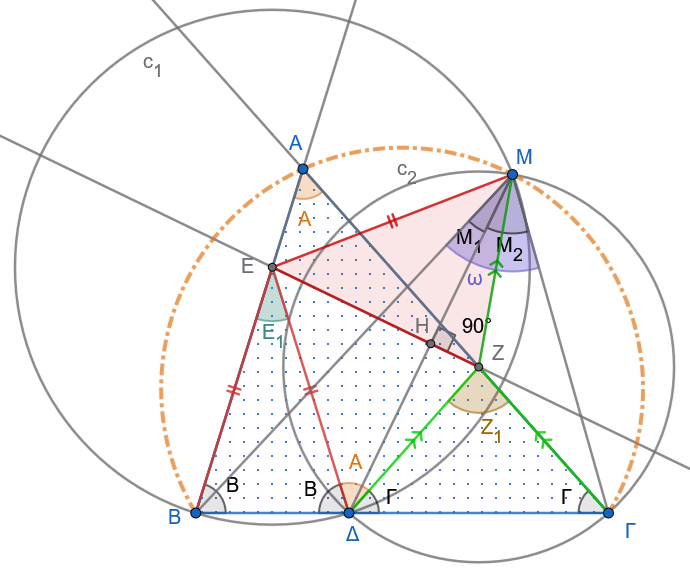
- Επειδή το \(M\) είναι το συμμετρικό του \(\Delta\) ως προς την ευθεία \(EZ\), τα τρίγωνα \(EZ\Delta\) και \(EZM\) είναι ίσα (συμμετρικά), οπότε: \[EB=ΕΔ =ΕΜ\]
Άρα το Ε είναι το περίκεντρο του τριγώνου \(ΒΔΜ\) και η εγγεγραμμένη γωνία \(Μ_1=\widehat{BMΔ}=\dfrac{\hat Ε_1}{2} \ \ \ (1)\) της αντίστοιχης επίκεντρης \(\hat E_1\)
Όμοια \[ΖΔ=ΖΓ=ΖΜ\] και άρα το Ζ είναι το περίκεντρο του τριγώνου \(ΜΔΓ\) και επομένως η εγγεγραμμένη γωνία \(Μ_2=\widehat{ΖΜΓ}=\dfrac{\hat Z_1}{2} \ \ \ \ (2)\)
Προσθέτοντας τις (1) και (2) έχουμε \[\hat ω =\widehat{ΒΜΓ}=\hat M_1 +\hat M_2=\dfrac{\hat E_1+Z_1}{2} \ \ \ \ \ (3)\]
Όμως από τα ισοσκελή τρίγωνα ΒΕΔ και ΔΖΓ έχουμε \(\hat Ε_1=180^ο-2\hat Β\) και \(\hat Ζ_1=180^ο-2\hat Γ\).
Από τα παραπάνω η (3) γράφεται \[\hat ω=\dfrac{\hat E_1+Z_1}{2}=180^ο-(\hat Β+\hat Γ)=\hat A\]
Σχέση των γωνιών \(\widehat{BAΓ}\) και \(\widehat{ΒMΓ}\):
- Η τελευταία σχέση μα λέει ότι το σταθερό τμήμα ΒΓ φαίνεται υπό σταθερή γωνία \(\hat Α\), άρα ο γ.τ. είναι το τόξο \(\overparen{ΒΑΜΓ}\) που βλέπει το τμήμα ΒΓ υπό σταθερή γωνία \(\hatΑ\)
- Άσκηση 7: Να βρεθεί ο γεωμετρικός τόπος των ορθοκέντρων \(H\) των τριγώνων \(ABΓ\) που έχουν σταθερή τη βάση \(BΓ\) και τη γωνία της κορυφής \(\widehat{A} = \omega\) σταθερή.
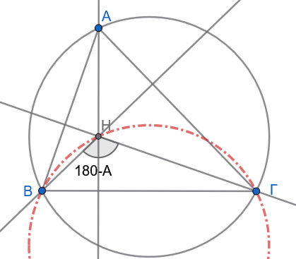
Υπόδειξη:
Η γωνία \(\widehat{ΒΗΓ}=180^ο-\hat Α= \text { Σταθερή }\) βλέπει το σταθερό τμήμα ΒΓ.
- Άσκηση 8: Να κατασκευαστεί τρίγωνο \(ABΓ\) όταν δίνονται τα μήκη των τριών διαμέσων του \(μ_a, μ_β, μ_γ\).
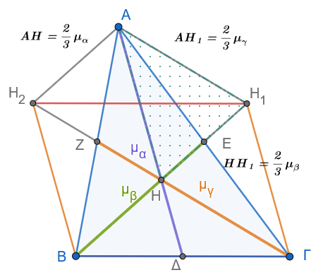
Υπόδειξη:
Κατασκευάζουμε τρίγωνο \(ΑΗΗ_1\) με σταθερές πλευρές \(ΑΗ=\dfrac{2}{3}μ_α\), \(ΑΗ_1=\dfrac{2}{3}μ_γ\) και \(ΗΗ_1=\dfrac{2}{3}μ_β\)
Σχεδιάζουμε τις παραλλήλους \(ΑΗ_2\), \(Η_2Γ\), \(Η_1Γ\) και την προέκταση της \(ΗΗ_1\) για να προσδιορίσουμε τις άλλες δύο κορυφές του τριγώνου ΑΒΓ.
- Άσκηση 9: Να βρεθεί ο γεωμετρικός τόπος των μέσων \(M\) των ευθύγραμμων τμημάτων σταθερού μήκους \(a\), των οποίων τα άκρα ολισθαίνουν πάνω στις πλευρές ορθής γωνίας \(\widehat{xOy}\).
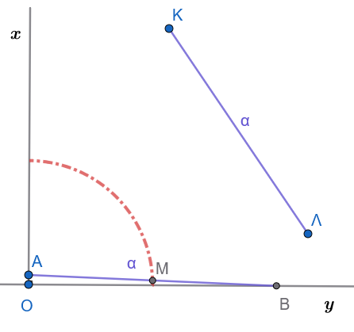
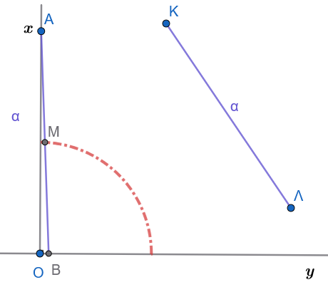
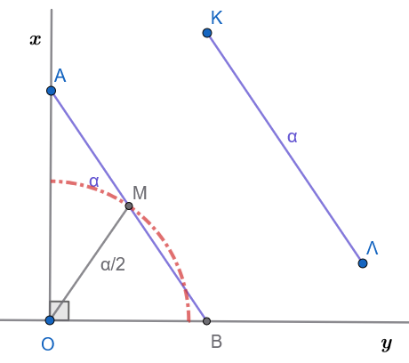
Υπόδειξη:
Το Μ κινείται πάντα σε σταθερή απόσταση \(\dfrac{α}{2}\) από το σταθερό σημείο Ο.
- Άσκηση 10:
Από ένα δοσμένο σημείο \(A\), να αχθεί (να φερθεί) εφαπτομένη σε δοσμένο κύκλο \((O, R)\).
Λύση
1. Σύνθεση (Κατασκευή)
Ενώνουμε το κέντρο \(O\) του κύκλου με το δοσμένο σημείο \(A\) σχηματίζοντας το ευθύγραμμο τμήμα \(OA\).
Βρίσκουμε το μέσο \(K\) του τμήματος \(OA\).
Με κέντρο το \(K\) και διάμετρο το \(OA\) (ακτίνα \(KA = KO\)), γράφουμε βοηθητικό κύκλο \((K)\), ο οποίος τέμνει τον αρχικό κύκλο \((O)\) σε ένα σημείο \(B\) (και σε ένα σημείο \(B'\)).
Φέρνουμε την ευθεία \(AB\). Αυτή είναι η ζητούμενη εφαπτομένη.
2. Απόδειξη
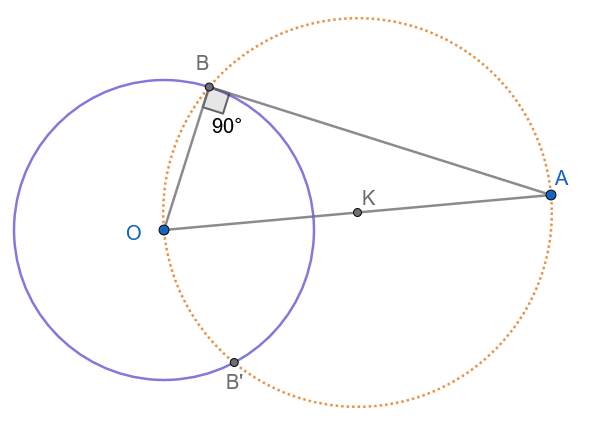
Αρκεί να αποδείξουμε ότι η ακτίνα \(OB\) είναι κάθετη στην ευθεία \(AB\) (\(OB \perp AB\)).
Η γωνία \(\widehat{OBA}\) είναι εγγεγραμμένη στον κύκλο \((K)\) και βαίνει σε ημικύκλιο (αφού η \(OA\) είναι διάμετρος).
Επομένως: \[\widehat{OBA} = 90^\circ\]
Άρα, η ευθεία \(AB\) είναι κάθετη στην ακτίνα \(OB\) στο άκρο της \(B\), γεγονός που σημαίνει ότι η \(AB\) εφάπτεται στον κύκλο \((O)\) στο σημείο \(B\).
3. Διερεύνηση
Έστω \(\delta = OA\) η απόσταση του σημείου \(A\) από το κέντρο \(O\), και \(R\) η ακτίνα του κύκλου:
Περίπτωση I: Το σημείο \(A\) είναι εξωτερικό του κύκλου (\(\delta > R\))
Ο βοηθητικός κύκλος διαμέτρου \(OA\) τέμνει τον αρχικό κύκλο \((O)\) σε δύο σημεία, \(B\) και \(B'\).
Επομένως, από το σημείο \(A\) άγονται δύο εφαπτόμενες, οι \(AB\) και \(AB'\) (οι οποίες είναι ίσες: \(AB = AB'\)).
Συμπέρασμα: \(\mathbf{2}\) λύσεις.
Περίπτωση II: Το σημείο \(A\) βρίσκεται πάνω στον κύκλο (\(\delta = R\))
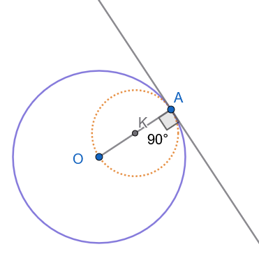
Ο βοηθητικός κύκλος διαμέτρου \(OA\) εφάπτεται εσωτερικά στον αρχικό κύκλο στο σημείο \(A\).
Η μοναδική εφαπτομένη είναι η κάθετος στην ακτίνα \(OA\) στο σημείο \(A\).
Συμπέρασμα: \(\mathbf{1}\) λύση.
Περίπτωση III: Το σημείο \(A\) είναι εσωτερικό του κύκλου (\(\delta < R\))
Ο βοηθητικός κύκλος βρίσκεται ολόκληρος στο εσωτερικό του αρχικού κύκλου και δεν έχει κανένα κοινό σημείο με αυτόν.
Από εσωτερικό σημείο κύκλου δεν μπορεί να αχθεί καμία εφαπτομένη (κάθε ευθεία που διέρχεται από το \(A\) είναι τέμνουσα).
Συμπέρασμα: Καμία λύση (\(\mathbf{0}\) λύσεις - αδύνατο).
Συνοπτικός Πίνακας
\[\begin{aligned} \delta > R &\implies \mathbf{2} \text{ λύσεις} \\ \delta = R &\implies \mathbf{1} \text{ λύση} \\ \delta < R &\implies \mathbf{0} \text{ λύσεις} \end{aligned}\]
- Άσκηση 11:
Να κατασκευαστεί τρίγωνο \(AB\Gamma\) του οποίου δίνονται:
Η πλευρά \(AB = \gamma\)
Η πλευρά \(B\Gamma = \alpha\)
Η απέναντι γωνία \(\widehat{A} = \omega\)
Λύση
1. Κατασκευή
Σχεδιάζουμε μία ημιευθεία \(Ax\).
Με κορυφή το σημείο \(A\) και αρχική πλευρά την \(Ax\), κατασκευάζουμε γωνία ίση με \(\omega\), ορίζοντας έτσι την ημιευθεία \(Ay\).
Πάνω στην ημιευθεία \(Ay\) παίρνουμε τμήμα \(AB = \gamma\).
Με κέντρο το σημείο \(B\) και ακτίνα ίση με \(\alpha\), γράφουμε κύκλο \((B, \alpha)\).
Αν ο κύκλος αυτός τέμνει την ημιευθεία \(Ax\) σε σημείο \(\Gamma\), τότε το τρίγωνο \(AB\Gamma\) είναι το ζητούμενο.
2. Απόδειξη
Το κατασκευασμένο τρίγωνο \(AB\Gamma\):
Έχει γωνία \(\widehat{A} = \omega\) (εξ ορισμού της κατασκευής).
Έχει πλευρές \(AB = \gamma\) και \(B\Gamma = \alpha\) (καθώς το \(\Gamma\) ανήκει στον κύκλο \((B, \alpha)\)).
3. Διερεύνηση
Έστω \(\delta\) η απόσταση (το ύψος) από την κορυφή \(B\) προς την ευθεία \(Ax\) (όπου \(δ = γ\cdot ημ ω\)).
Αλλάξτε τις τιμές των * γωνίας \(\hatω\) * πλευράς α * πλευράς γ
κλίκ στον αντίστοιχο δρομέα και μετακίνηση
Για μεγαλύτερη ακρίβεια : κλικ στο δρομέα και Shift+βελάκι δεξιά-αριστερά για αυξομείωση.
Διερευνήστε τις παρακάτω περιπτώσεις
Περίπτωση I: \(\alpha < \delta\)
Ο κύκλος \((B, \alpha)\) δεν έχει κανένα κοινό σημείο με την ευθεία \(Ax\).
Συμπέρασμα: Το πρόβλημα είναι αδύνατο (\(0\) λύσεις).
Περίπτωση II: \(\alpha = \delta\)
Ο κύκλος \((B, \alpha)\) εφάπτεται της ευθείας \(Ax\) σε ένα μοναδικό σημείο \(\Gamma\).
Υποπεριπτώσεις:
- Αν \(\widehat{A} < 90^\circ\) (οξεία): Το σημείο \(\Gamma\) βρίσκεται πάνω στην ημιευθεία \(Ax\). Σχηματίζεται \(1\) ορθογώνιο τρίγωνο (\(\widehat{\Gamma} = 90^\circ\)).
- Αν \(\widehat{A} \ge 90^\circ\) (ορθή ή αμβλεία): Το σημείο επαφής πέφτει στην αντικείμενη ημιευθεία, συνεπώς καμία λύση.
Περίπτωση III: \(\alpha > \delta\)
- Ο κύκλος τέμνει την ευθεία \(Ax\) σε δύο σημεία, \(\Gamma\) και \(\Gamma'\). Εξετάζουμε τη θέση τους ανάλογα με το είδος της γωνίας \(\widehat{A}\) και τη σχέση των μηκών \(\alpha\) και \(\gamma\):
Αν η γωνία \(\widehat{A} < 90^\circ\) (οξεία):
Όταν \(\alpha < \gamma\): Και τα δύο σημεία \(\Gamma, \Gamma'\) βρίσκονται πάνω στην ημιευθεία \(Ax\). Σχηματίζονται δύο διαφορετικά τρίγωνα (\(AB\Gamma\) και \(AB\Gamma'\)). \(\implies\) \(2\) λύσεις.
Όταν \(\alpha = \gamma\): Το ένα σημείο (\(\Gamma'\)) συμπίπτει με την κορυφή \(A\) (εκφυλισμένο τρίγωνο), ενώ το άλλο σημείο \(\Gamma\) δίνει ένα ισοσκελές τρίγωνο \(AB\Gamma\). \(\implies\) \(1\) λύση.
Όταν \(\alpha > \gamma\): Το σημείο \(\Gamma\) βρίσκεται στην ημιευθεία \(Ax\), ενώ το \(\Gamma'\) στην αντικείμενη ημιευθεία (όπου σχηματίζεται η παραπληρωματική γωνία \(180^\circ - \omega\)). \(\implies\) \(1\) λύση.
Αν η γωνία \(\widehat{A} = 90^\circ\) (ορθή):
Όταν \(\alpha > \gamma\): Η πλευρά \(\alpha\) είναι η υποτείνουσα και είναι μεγαλύτερη από την κάθετη \(\gamma\). \(\implies\) \(1\) λύση.
Όταν \(\alpha \le \gamma\): Αδύνατο, γιατί η υποτείνουσα πρέπει να είναι αυστηρά μεγαλύτερη από την κάθετη πλευρά. \(\implies\) \(0\) λύσεις.
Αν η γωνία \(\widehat{A} > 90^\circ\) (αμβλεία):
Όταν \(\alpha > \gamma\): Το ένα σημείο δίνει τρίγωνο που περιέχει την αμβλεία γωνία \(\omega\). \(\implies\) \(1\) λύση.
Όταν \(\alpha \le \gamma\): Αδύνατο (απέναντι από την αμβλεία γωνία πρέπει να βρίσκεται η μεγαλύτερη πλευρά). \(\implies\) \(0\) λύσεις.
Συνοπτικός Πίνακας Διερεύνησης
| Σχέση \(\alpha\) και \(\delta\) | Είδος Γωνίας \(\widehat{A}\) | Σχέση \(\alpha\) και \(\gamma\) | Πλήθος Λύσεων | Είδος / Παρατήρηση |
|---|---|---|---|---|
| \(\alpha < \delta\) | Οποιαδήποτε | Οποιαδήποτε | \(0\) | Αδύνατο (ο κύκλος δεν τέμνει την ευθεία) |
| \(\alpha = \delta\) | \(\widehat{A} < 90^\circ\) | — | \(1\) | Ορθογώνιο τρίγωνο στο \(\Gamma\) |
| \(\widehat{A} \ge 90^\circ\) | — | \(0\) | Αδύνατο | |
| \(\alpha > \delta\) | \(\widehat{A} < 90^\circ\) | \(\alpha < \gamma\) | \(2\) | Δύο δεκτά τρίγωνα |
| \(\alpha = \gamma\) | \(1\) | Ισοσκελές τρίγωνο | ||
| \(\alpha > \gamma\) | \(1\) | Μία δεκτή λύση | ||
| \(\widehat{A} = 90^\circ\) | \(\alpha > \gamma\) | \(1\) | Ορθογώνιο τρίγωνο | |
| \(\alpha \le \gamma\) | \(0\) | Αδύνατο | ||
| \(\widehat{A} > 90^\circ\) | \(\alpha > \gamma\) | \(1\) | Αμβλυγώνιο τρίγωνο | |
| \(\alpha \le \gamma\) | \(0\) | Αδύνατο |
- Άσκηση 12:
Δίνονται δύο κύκλοι \((O_1, R_1)\) και \((O_2, R_2)\) με \(R_1 > R_2\). Να κατασκευαστεί ευθεία που να εφάπτεται ταυτόχρονα και στους δύο κύκλους (κοινή εφαπτομένη).
Μέρος Α: Κοινή Εξωτερική Εφαπτομένη
1. Ανάλυση
Έστω ότι η ζητούμενη εφαπτομένη είναι η ευθεία \(AB\) (με σημεία επαφής \(A\) και \(B\)).
Φέρνουμε τις ακτίνες \(O_1A\) και \(O_2B\) στα σημεία επαφής, οι οποίες είναι κάθετες στην \(AB\) (\(O_1A \perp AB\) και \(O_2B \perp AB\)).
Από το κέντρο \(O_2\) φέρουμε παράλληλη προς την \(AB\), η οποία τέμνει την ακτίνα \(O_1A\) στο σημείο \(\Gamma\).
Τότε:
Το τετράπλευρο \(ABO_2\Gamma\) είναι ορθογώνιο παραλληλόγραμμο, άρα \(A\Gamma = O_2B = R_2\).
Επομένως: \[O_1\Gamma = O_1A - A\Gamma = R_1 - R_2\]
Επειδή \(\widehat{O_2\Gamma O_1} = 90^\circ\), η ευθεία \(O_2\Gamma\) εφάπτεται στον βοηθητικό κύκλο \((O_1, R_1 - R_2)\).
Συνεπώς, το πρόβλημα ανάγεται στην κατασκευή εφαπτομένης από το εξωτερικό σημείο \(O_2\) προς έναν βοηθητικό κύκλο με κέντρο \(O_1\) και ακτίνα \(R_1 - R_2\).
2. Σύνθεση (Κατασκευή)
Με κέντρο το \(O_1\) και ακτίνα \(R_1 - R_2\), γράφουμε τον βοηθητικό κύκλο \((O_1, R_1 - R_2)\).
Από το σημείο \(O_2\) φέρουμε εφαπτομένη προς τον βοηθητικό κύκλο και ονομάζουμε \(\Gamma\) το σημείο επαφής.
Προεκτείνουμε την ακτίνα \(O_1\Gamma\) μέχρι να τμήσει τον αρχικό κύκλο \((O_1, R_1)\) στο σημείο \(A\).
Από το \(O_2\) φέρουμε ακτίνα \(O_2B\) παράλληλη και ομόρροπη προς την \(O_1A\), η οποία τέμνει τον κύκλο \((O_2, R_2)\) στο σημείο \(B\).
Ενώνουμε τα σημεία \(A\) και \(B\). Η ευθεία \(AB\) είναι η ζητούμενη κοινή εξωτερική εφαπτομένη.
3. Απόδειξη
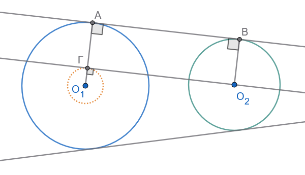
Έχουμε \(\Gamma A = O_1A - O_1\Gamma = R_1 - (R_1 - R_2) = R_2\).
Επίσης \(O_2B = R_2\), άρα \(\Gamma A = O_2B\) και επιπλέον \(\Gamma A \parallel O_2B\).
Επομένως, το τετράπλευρο \(\Gamma ABO_2\) είναι παραλληλόγραμμο.
Επειδή η γωνία \(\widehat{\Gamma}\) είναι ορθή (\(90^\circ\)), το παραλληλόγραμμο είναι ορθογώνιο, οπότε η ευθεία \(AB\) είναι κάθετη στα άκρα των ακτίνων \(O_1A\) και \(O_2B\).
Άρα, η \(AB\) εφάπτεται και στους δύο κύκλους.
4. Ορισμός & Παρατήρηση
- Ορισμός: Μια κοινή εφαπτομένη ονομάζεται εξωτερική, όταν οι δύο κύκλοι βρίσκονται στο ίδιο ημιεπίπεδο ως προς αυτήν.
5. Διερεύνηση (Κοινές Εξωτερικές Εφαπτόμενες)
Έστω \(d = O_1O_2\) η διάκεντρος των δύο κύκλων:
Αν \(d > R_1 - R_2\): Υπάρχουν \(2\) κοινές εξωτερικές εφαπτόμενες, οι οποίες είναι συμμετρικές ως προς τη διάκεντρο \(O_1O_2\).
Αν \(d = R_1 - R_2\) (εσωτερική επαφή): Υπάρχει \(1\) κοινή εξωτερική εφαπτομένη (στο κοινό σημείο επαφής).
Αν \(d < R_1 - R_2\) (ο ένας κύκλος βρίσκεται εντός του άλλου): Δεν υπάρχει καμία (\(0\)) εξωτερική εφαπτομένη.
Μέρος Β: Κοινή Εσωτερική Εφαπτομένη
1. Ανάλυση & Κατασκευή
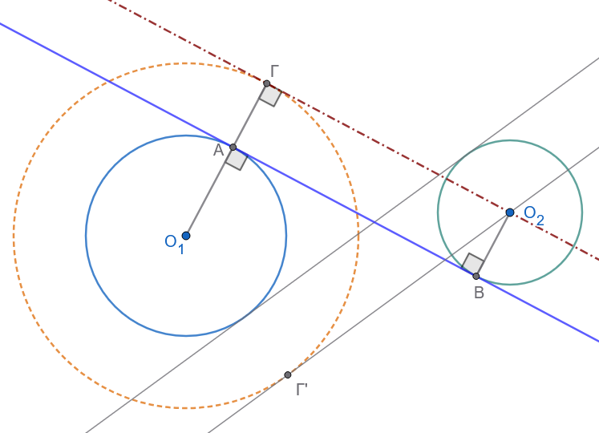
Όταν οι συνθήκες το επιτρέπουν, μπορούμε να κατασκευάσουμε και εσωτερικές εφαπτόμενες:
Με κέντρο το \(O_1\) και ακτίνα \(R_1 + R_2\), γράφουμε τον βοηθητικό κύκλο \((O_1, R_1 + R_2)\).
Από το σημείο \(O_2\) φέρουμε εφαπτομένη \(O_2\Gamma\) προς τον βοηθητικό κύκλο (με σημείο επαφής το \(\Gamma\)).
Ενώνουμε το \(O_1\) με το \(\Gamma\). Το ευθύγραμμο τμήμα \(O_1\Gamma\) τέμνει τον κύκλο \((O_1, R_1)\) στο σημείο \(A\).
Από το \(O_2\) φέρουμε ακτίνα \(O_2B\) παράλληλη αλλά αντίρροπη προς την \(O_1\Gamma\), η οποία τέμνει τον κύκλο \((O_2, R_2)\) στο σημείο \(B\).
Η ευθεία \(AB\) είναι η κοινή εσωτερική εφαπτομένη.
2. Ορισμός & Παρατήρηση
- Ορισμός: Μια κοινή εφαπτομένη ονομάζεται εσωτερική, όταν οι δύο κύκλοι βρίσκονται σε διαφορετικά ημιεπίπεδα (εκατέρωθεν) ως προς αυτήν.
3. Διερεύνηση (Κοινές Εσωτερικές Εφαπτόμενες)
Έστω \(d = O_1O_2\) η διάκεντρος:
Αν \(d > R_1 + R_2\) (κύκλοι εξωτερικοί μεταξύ τους): Υπάρχουν \(2\) κοινές εσωτερικές εφαπτόμενες, συμμετρικές ως προς τη διάκεντρο.
Αν \(d = R_1 + R_2\) (εξωτερική επαφή): Υπάρχει \(1\) κοινή εσωτερική εφαπτομένη (η κάθετη στη διάκεντρο στο σημείο επαφής).
Αν \(d < R_1 + R_2\) (οι κύκλοι τέμνονται ή ο ένας είναι εσωτερικός του άλλου): Δεν υπάρχει καμία (\(0\)) εσωτερική εφαπτομένη.
Συνοπτικός Πίνακας Πλήθους Κοινών Εφαπτομένων
| Σχετική Θέση Κύκλων | Σχέση Διακέντρου \(d\) και Ακτίνων | Εξωτερικές | Εσωτερικές | Σύνολο |
|---|---|---|---|---|
| Εξωτερικοί κύκλοι | \(d > R_1 + R_2\) | \(2\) | \(2\) | \(4\) |
| Εφαπτόμενοι εξωτερικά | \(d = R_1 + R_2\) | \(2\) | \(1\) | \(3\) |
| Τεμνόμενοι κύκλοι | \(R_1 - R_2 < d < R_1 + R_2\) | \(2\) | \(0\) | \(2\) |
| Εφαπτόμενοι εσωτερικά | \(d = R_1 - R_2\) | \(1\) | \(0\) | \(1\) |
| Ο ένας εντός του άλλου | \(d < R_1 - R_2\) | \(0\) | \(0\) | \(0\) |
- Άσκηση 13:
Δίνεται τρίγωνο \(AB\Gamma\) και ένα τυχαίο σημείο \(\Delta\) πάνω στην πλευρά \(B\Gamma\).
Κατασκευάζουμε δύο κύκλους \((c_1)\) και \((c_2)\), όπου:
Ο πρώτος κύκλος \((c_1)\) διέρχεται από τα σημεία \(B\) και \(\Delta\), και εφάπτεται στην ευθεία \(AB\) (στο σημείο \(B\)).
Ο δεύτερος κύκλος \((c_2)\) διέρχεται από τα σημεία \(\Gamma\) και \(\Delta\), και εφάπτεται στην ευθεία \(A\Gamma\) (στο σημείο \(\Gamma\)).
Ζητούμενο:
Να βρεθεί ο γεωμετρικός τόπος του άλλου σημείου τομής \(M\) των δύο αυτών κύκλων (εκτός του \(\Delta\)), καθώς το σημείο \(\Delta\) κινείται πάνω στην πλευρά \(B\Gamma\).
Λύση & Απόδειξη
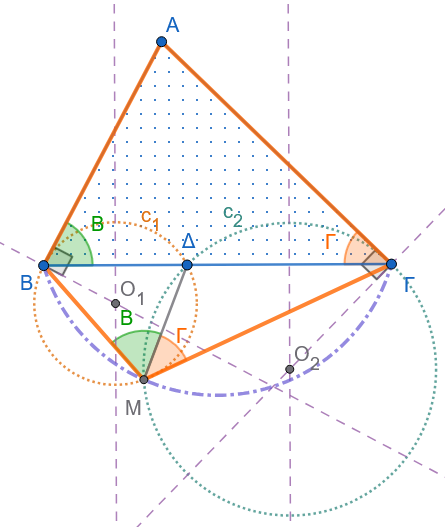
Γωνίες στον κύκλο \((c_1)\):
Η ευθεία \(AB\) εφάπτεται στον κύκλο \((c_1)\) στο σημείο \(B\), άρα η γωνία υπό χορδής και εφαπτομένης \(\widehat{AB\Delta}\) ισούται με τη γωνία \(\widehat{B}\) του τριγώνου \(AB\Gamma\).
Η εγγεγραμμένη γωνία \(\widehat{BM\Delta}\) που «βλέπει» τη χορδή \(B\Delta\) είναι ίση με την υπό χορδής και εφαπτομένης γωνίας Β: \[\widehat{BM\Delta} = \widehat{B}\]
Γωνίες στον κύκλο \((c_2)\):
Ομοίως, η ευθεία \(A\Gamma\) εφάπτεται στον κύκλο \((c_2)\) στο σημείο \(\Gamma\), άρα η αντίστοιχη γωνία είναι η \(\widehat{\Gamma}\).
Η εγγεγραμμένη γωνία \(\widehat{\Gamma M\Delta}\) που «βλέπει» τη χορδή \(\Gamma\Delta\) είναι: \[\widehat{\Gamma M\Delta} = \widehat{\Gamma}\]
Υπολογισμός της γωνίας \(\widehat{BM\Gamma}\):
Αθροίζοντας τις γωνίες γύρω από το σημείο \(M\): \[\widehat{BM\Delta} + \widehat{\Gamma M\Delta} = \widehat{B} + \widehat{\Gamma} =180^ο-\hat A\]
\[\widehat{BM\Gamma} = 180^\circ - \widehat{A} \iff \widehat{BM\Gamma} + \widehat{A} = 180^\circ\]
Συμπέρασμα
Επειδή οι απέναντι γωνίες \(\widehat{A}\) και \(\widehat{BM\Gamma}\) είναι παραπληρωματικές (\(\widehat{A} + \widehat{BM\Gamma} = 180^\circ\)), το τετράπλευρο \(ABM\Gamma\) είναι εγγράψιμο σε κύκλο.
Επομένως, το σημείο \(M\) ανήκει στον περιγεγραμμένο κύκλο του τριγώνου \(AB\Gamma\).
Γεωμετρικός Τόπος:
Ο γεωμετρικός τόπος του σημείου \(M\), καθώς το \(\Delta\) διατρέχει το ευθύγραμμο τμήμα \(B\Gamma\), είναι το κυκλικό τόξο \(\overparen{BM\Gamma}\) του περιγεγραμμένου κύκλου του τριγώνου \(AB\Gamma\) (το τόξο που βρίσκεται στο αντίθετο ημιεπίπεδο της κορυφής \(A\) ως προς την ευθεία \(B\Gamma\)).
- Άσκηση 14:
Δίνεται ημιπεριφέρεια \((c)\) με διάμετρο \(AB\) και το τετράγωνο \(AB\Gamma\Delta\), το οποίο βρίσκεται στο άλλο ημιεπίπεδο ως προς την ευθεία \(AB\) από εκείνο της ημιπεριφέρειας \((c)\).
Θεωρούμε ένα τυχαίο σημείο \(E\) πάνω στην ημιπεριφέρεια και, με πλευρά τη χορδή \(AE\), κατασκευάζουμε το τετράγωνο \(AEZH\), έτσι ώστε το τόξο \(AE\) να βρίσκεται στο εσωτερικό του.
Ζητούμενο:
Να βρεθεί ο γεωμετρικός τόπος του σημείου τομής \(M\) των ευθειών \(\Delta E\) και \(BH\), καθώς το σημείο \(E\) διαγράφει ολόκληρη την ημιπεριφέρεια \((c)\).
Λύση & Απόδειξη
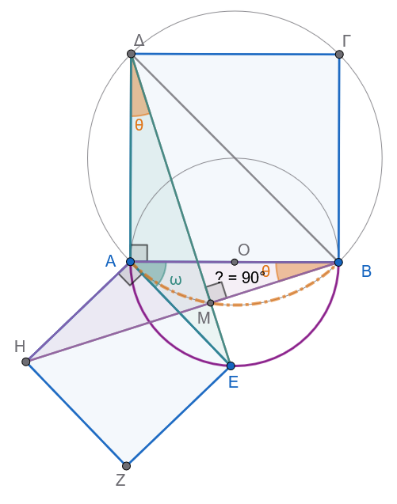
Σύγκριση τριγώνων (ή Στροφή \(90^\circ\) γύρω από το \(A\)):
Στο τετράγωνο \(AB\Gamma\Delta\) έχουμε: \[AB = A\Delta \quad \text{και} \quad \widehat{BA\Delta} = 90^\circ\]
Στο τετράγωνο \(AEZH\) έχουμε: \[AH = AE \quad \text{και} \quad \widehat{HAE} = 90^\circ\]
Συγκρίνουμε τις γωνίες \(\widehat{BAH}\) και \(\widehat{\Delta AE}\): \[\widehat{BAH} = 90^\circ - \widehat{EAB}\] \[\widehat{\Delta AE} = 90^\circ - \widehat{EAB}\]
Άρα: \[\widehat{BAH} = \widehat{\Delta AE}\]
Ισότητα τριγώνων \(ABH\) και \(A\Delta E\):
Τα τρίγωνα \(ABH\) και \(A\Delta E\) έχουν:
\(AB = A\Delta\) (πλευρές του ίδιου τετραγώνου)
\(AH = AE\) (πλευρές του ίδιου τετραγώνου)
\(\widehat{BAH} = \widehat{\Delta AE}\) (περιεχόμενες γωνίες)
Επομένως, τα τρίγωνα είναι ίσα (κριτήριο Π-Γ-Π), άρα και οι αντίστοιχες γωνίες τους είναι ίσες: \[\widehat{ABH} = \widehat{A\Delta E} \iff \widehat{ABM} = \widehat{A\Delta M}\]
Εγγραψιμότητα:
Επειδή οι κορυφές \(B\) και \(\Delta\) «βλέπουν» το ευθύγραμμο τμήμα \(AM\) υπό ίσες γωνίες (\(\widehat{ABM} = \widehat{A\Delta M}\)), το τετράπλευρο \(ABM\Delta\) είναι εγγράψιμο σε κύκλο.
Επειδή στο τετράγωνο \(AB\Gamma\Delta\) η γωνία \(\widehat{BA\Delta}\) είναι ορθή (\(90^\circ\)), το τμήμα \(B\Delta\) είναι διάμετρος του περιγεγραμμένου αυτού κύκλου (του κύκλου που διέρχεται από τις κορυφές του τετραγώνου \(AB\Gamma\Delta\)).
Συνεπώς, και η γωνία \(\widehat{\Delta M B}\) είναι ορθή (\(90^\circ\)), καθώς βαίνει σε ημικύκλιο διαμέτρου \(B\Delta\).
(Επίσης μπορούμε να πούμε ότι:
Αφού \(\widehat{ΑΒΜ}=\widehat{ΑΔΜ}\) και \(ΑΔ\perp AΒ\) θα πρέπει οι ίσες γωνίες να έχουν και τις άλλες πλευρές τους κάθετες δηλαδή \(ΔE \perp ΒΗ\))
Συμπέρασμα
Το σημείο \(M\) κινείται πάνω στον περιγεγραμμένο κύκλο του τετραγώνου \(AB\Gamma\Delta\) (κύκλος με διάμετρο τη διαγώνιο \(B\Delta\)).
Γεωμετρικός Τόπος:
Ο γεωμετρικός τόπος του σημείου \(M\), καθώς το \(E\) διαγράφει την ημιπεριφέρεια \((c)\), είναι το κυκλικό τόξο του περιγεγραμμένου κύκλου του τετραγώνου \(AB\Gamma\Delta\) που ορίζεται μεταξύ των σημείων \(A\) και \(B\).
- Άσκηση 15:
Πρόβλημα του Compagnon)
Να κατασκευαστεί τρίγωνο \(AB\Gamma\) του οποίου δίνονται:
Η βάση \(B\Gamma\) (κατά θέση και μέγεθος).
Η διαφορά των προσκείμενων στη βάση γωνιών: \(\widehat{B} - \widehat{\Gamma} = \omega\).
Μία ευθεία \((\epsilon)\), πάνω στην οποία βρίσκεται η κορυφή \(A\).
Λύση
Ανάλυση
Έστω (Σχήμα 15.1) \(AB\Gamma\) το ζητούμενο τρίγωνο. Γνωρίζω τη βάση \(B\Gamma = a\), τη διαφορά \(\widehat{B} - \widehat{\Gamma} = \omega\) και την ευθεία \(\epsilon\) πάνω στην οποία κείται το \(A\). Πάνω στην πλευρά \(A\Gamma\) (όπου \(A\Gamma > AB\)) λαμβάνω το ευθύγραμμο τμήμα \(AB' = AB\). Η ευθεία \(BB^{\prime }\) τέμνει την \(\epsilon\) στο σημείο \(E\).
Ονομάζω \(x\) τη γωνία \(\widehat{ABB^{\prime }}\), οπότε θα είναι επίσης και \(\widehat{AB'B} = x\) και \[\widehat{B} = x + \widehat{B'B\Gamma} \ \ \ \ (1)\].
Επειδή η γωνία \(\widehat{AB^{\prime }B}\) είναι εξωτερική του τριγώνου \(B'\Gamma B\), θα ισχύει \[x = \widehat{\Gamma} + \widehat{B'B\Gamma} \ \ \ \ (2)\].
Προσθέτω αυτές τις δύο ισότητες κατά μέλη και έχω: \[\widehat{B}+x=\widehat{B^{\prime }B\Gamma }+x+\widehat{\Gamma }+\widehat{B^{\prime }B\Gamma }\implies \widehat{B^{\prime }B\Gamma }=\dfrac{\widehat{B}-\widehat{\Gamma }}{2}=\dfrac{\omega }{2}\]
Η ευθεία λοιπόν \(BE\) διέρχεται από το γνωστό σημείο \(B\) και σχηματίζει γνωστή γωνία με τη γνωστή διεύθυνση \(B\Gamma\), άρα είναι γνωστή.
Επομένως, θα είναι επίσης γνωστή και η γωνία \(\phi\) την οποία σχηματίζει αυτή με τη γνωστή διεύθυνση της \(\epsilon\).
Έστω ότι το \(B_{1}\) είναι το συμμετρικό του \(B\) ως προς την \(\epsilon\).
Η γωνία \(\widehat{AB_{1}E}\) είναι συμμετρική της \(\widehat{ABE}\) ως προς την \(\epsilon\), άρα \(\widehat{AB_1E} = \widehat{ABE} = \widehat{AB'B}\).
Συνεπώς, το τετράπλευρο \(B_1EB'A\) είναι εγγράψιμο (διότι η μία εσωτερική του γωνία ισούται με την απέναντι εξωτερική), και κατά συνέπεια προκύπτει ότι η γωνία \(\widehat{B_1AB'} = 180^\circ - 2\phi\).
Από αυτά προκύπτει η εξής κατασκευή:
Σύνθεση (Κατασκευή)
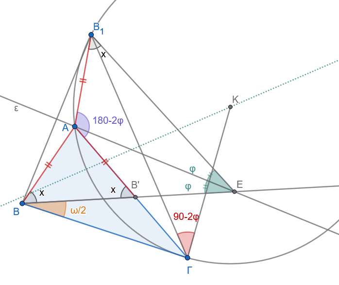
Φέρω την ευθεία \(BE\), η οποία σχηματίζει με τη \(B\Gamma\) γωνία ίση με \(\dfrac{\omega }{2}\) και βρίσκεται στο ημιεπίπεδο στο οποίο βρίσκεται και το \(A\) ως προς την ευθεία \(B\Gamma\).
Έστω ότι αυτή τέμνει την \(\epsilon\) στο σημείο \(E\).
Ονομάζω \(\phi\) τη γωνία \(\widehat{BEA}\). Αν \(B_{1}\) είναι το συμμετρικό του \(B\) ως προς την \(\epsilon\), γράφω ένα τόξο κύκλου το οποίο να δέχεται ως χορδή το τμήμα \(B_1\Gamma\) και να αντιστοιχεί σε εγγεγραμμένη γωνία ίση με \(180^\circ - 2\phi\).
Κατασκευή του τόξου:
με πλευρά την \(Β_1Γ\) σχεδιάζω γωνία \(\widehat{Β_1ΓΚ}=90^ο-2φ\) στο ημιεπίπεδο που βρίσκεται και το Ε και το Κ είναι η τομή της πλευράς \(ΒΚ\) με την μεσοκάθετη της \(Β_1Γ\).
Έστω ότι το τόξο αυτό τέμνει την \(\epsilon\) στο σημείο \(A\). Το τρίγωνο \(AB\Gamma\) είναι το ζητούμενο.
Απόδειξη
Το τρίγωνο \(AB\Gamma\) έχει πλευρά τη \(B\Gamma\) και την κορυφή \(A\) πάνω στην \(\epsilon\). Επειδή το τετράπλευρο \(B_1AB'E\) είναι εγγράψιμο, θα ισχύει \(\widehat{AB_1E} = \widehat{AB'B}\).
Όμως ισχύει και \(\widehat{AB_1E} = \widehat{ABB'}\) (διότι αυτές οι γωνίες είναι συμμετρικές ως προς την \(\epsilon\)).
Άρα \(\widehat{ABB'} = \widehat{AB'B}\). Επιπλέον, γνωρίζουμε ότι \(\widehat{AB\Gamma} = \widehat{ABB'} + \widehat{B'B\Gamma}\) και \(\widehat{AB'B} = \widehat{\Gamma} + \widehat{B'B\Gamma}\).
Από αυτές τις σχέσεις προκύπτει ότι \(\widehat{B'B\Gamma} = \dfrac{\widehat{B} - \widehat{\Gamma}}{2}\).
Όμως, εκ κατασκευής είναι \(\widehat{B'B\Gamma} = \dfrac{\omega}{2}\), άρα τελικά \(\widehat{B} - \widehat{\Gamma} = \omega\).
Διερεύνηση
Ι. Έστω ότι τα σημεία \(B\) και \(\Gamma\) βρίσκονται προς το ίδιο μέρος της ευθείας \(\epsilon\).
• Ια. Η ευθεία \(BB^{\prime }\) (Σχήμα 15.1) τέμνει την \(\epsilon\) σε ένα σημείο \(E\) προς το μέρος του \(\Gamma\). Τότε το πρόβλημα έχει πάντοτε λύση και μάλιστα μία μόνο. Γιατί; (Διότι το τετράπλευρο \(BAB_{1}E\) είναι κυρτό).
• Ιβ. Η ευθεία \(BB^{\prime }\) είναι παράλληλη προς την \(\epsilon\) (Σχήμα 15.2). Συνδέω το \(B_{1}\) με το \(\Gamma\) και έστω ότι η ευθεία \(B_1\Gamma\) τέμνει την \(\epsilon\) στο σημείο \(A\). Το τρίγωνο \(AB\Gamma\) είναι το ζητούμενο. Γιατί;
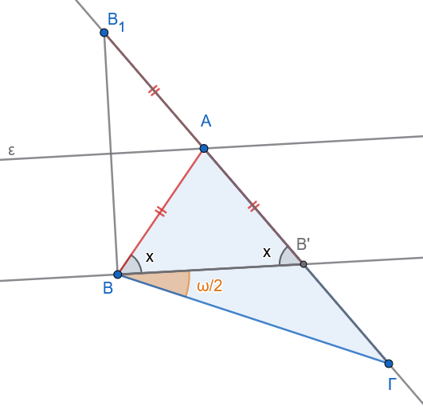
• Ιγ. Η ευθεία \(BB^{\prime }\) τέμνει την \(\epsilon\) σε ένα σημείο \(E\) το οποίο κείται στο ημιεπίπεδο ως προς την \(AB\) στο οποίο δεν βρίσκεται το \(\Gamma\) (Σχήμα 15.3).
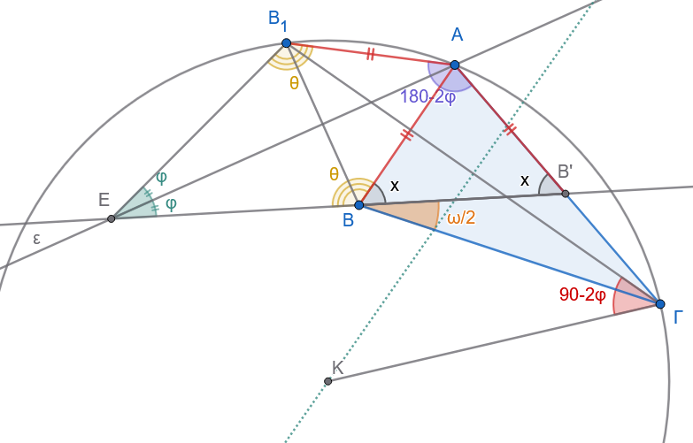
Επειδή \(\widehat{EB_1A} = \widehat{EBA}\) (λόγω συμμετρίας), \(\widehat{ABB'} + \widehat{EBA} = 180^\circ\) και \(\widehat{ABB'} = \widehat{AB'B}\), θα ισχύει \(\widehat{EB_1A} + \widehat{AB'B} = 180^\circ\), άρα και \(\widehat{B_1A\Gamma} + 2\phi = 180^\circ\).
Επομένως, το σημείο \(A\) ορίζεται κατά έναν μόνο τρόπο. Γιατί;
ΙΙ. Έστω τώρα ότι τα σημεία \(B\) και \(\Gamma\) δεν βρίσκονται προς το ίδιο ημιεπίπεδο ως προς την ευθεία \(\epsilon\) (Σχήμα 15.4).
Το συμμετρικό σημείο \(B_{1}\) του \(B\) ως προς την \(\epsilon\) θα βρίσκεται στο ίδιο ημιεπίπεδο με το \(\Gamma\) (ως προς την \(\epsilon\)). Έστω ότι η ευθεία \(BB^{\prime }\) τέμνει την \(\epsilon\) στο σημείο \(E\) και έστω \(\lambda\) η γωνία που σχηματίζουν οι ευθείες \(\epsilon\) και \(BB^{\prime }\).
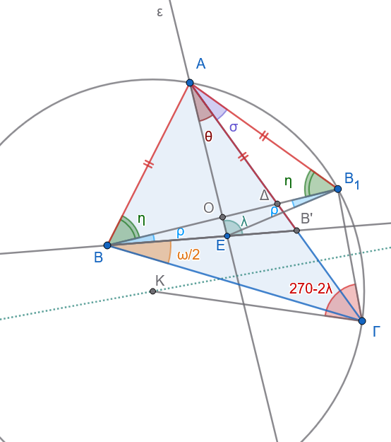
Η γωνία \(\hat\eta\) είναι η \(\widehat{ABB_{1}}\) (δηλαδή η \(\widehat{ABO}\)), ενώ οι τρεις εσωτερικές γωνίες του τριγώνου \(BOE\) είναι η ορθή (\(90^{\circ }\)), η \(\rho\) (στο \(B\)) και η παραπληρωματική της \(\lambda\) (στο \(E\)), δηλαδή η \(180^\circ - \lambda\).
Επομένως:
\((180^{\circ }-\lambda )+90^{\circ }+\rho =180^{\circ }\implies \mathbf{\lambda =90}^{\mathbf{\circ }}\mathbf{+\rho }\) Αν αντικαταστήσουμε τη σχέση (\(\rho = \lambda - 90^\circ\)) στο σύστημα των εξισώσεων, καταλήγουμε.
Σχέση \((\alpha)\) από το τρίγωνο \(AEB^{\prime }\): \(\widehat{B'} = 180^\circ - \lambda - \theta\)
Σχέση \((\gamma)\) από τη συμμετρία: \(\widehat{B'} = \eta + \rho\)
Εξισώνοντας τα δύο \(\widehat{B^{\prime }}\): \(180^\circ - \lambda - \theta = \eta + \rho\)
Αντικαθιστούμε τη σχέση \(\rho = \lambda - 90^\circ\): \(180^\circ - \lambda - \theta = \eta + (\lambda - 90^\circ) \implies 270^\circ - 2\lambda = \theta + \eta\)
Σχέση \((\beta)\) από το ορθογώνιο τρίγωνο \(Α OB_1\): Η γωνία στο \(B_{1}\) είναι ίση με \(\eta\) (λόγω συμμετρίας του τριγώνου \(ABB_{1}\)). Άρα στο ορθογώνιο \(Α OB_1\) έχουμε: \(\theta + \sigma + \eta = 90^\circ \implies \theta + \eta = 90^\circ - \sigma\).
Τελική εξίσωση: \(270^\circ - 2\lambda = 90^\circ - \sigma \implies \sigma = 2\lambda - 180^\circ\)
Συνεπώς, το σημείο \(A\) θα κείται πάνω στο τόξο κύκλου το οποίο δέχεται ως χορδή το τμήμα \(B_1\Gamma\) και αντιστοιχεί σε εγγεγραμμένη γωνία \(\sigma = 2\lambda - 180^\circ\), καθώς επίσης και πάνω στην ευθεία \(\epsilon\). Το σημείο \(A\) ορίζεται τελικά ως η τομή αυτών των δύο γραμμών (του τόξου και της ευθείας).
ΚΑΛΗ ΜΕΛΕΤΗ !!!